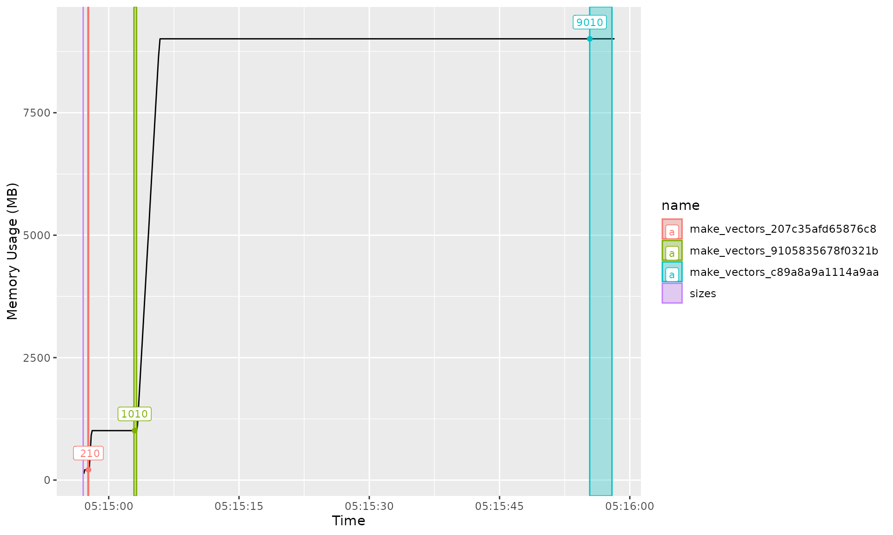

We create the targets pipeline as normal:
targets::tar_script({
list(
tar_target(sizes, c(10E6, 10E7, 10E8)),
tar_target(make_vectors, numeric(sizes), pattern = map(sizes))
)
}, ask = FALSE)We need to specify a directory that will be used to save the profiling results:
When it comes to running, we pass in the custom
callr_function. In addition, we need to pass that function
arguments using callr_arguments. One of these arguments
must be monitor_path.
targets::tar_make(
callr_function = tarprof::callr_profile,
callr_arguments = list(
monitor_path = monitor_path
)
)We can access the profiling data using profile_data.
This returns a data frame where each row is one timepoint, and the
columns correspond to various process metrics.
tarprof::profile_data(monitor_path)## # A tibble: 377 × 16
## rss vms shared text lib data dirty uss pss swap user
## <dbl> <dbl> <dbl> <dbl> <dbl> <dbl> <dbl> <dbl> <dbl> <dbl> <dbl>
## 1 209747968 4.28e8 7.81e6 4096 0 2.73e8 0 2.03e8 2.04e8 0 0.76
## 2 209747968 4.28e8 7.81e6 4096 0 2.73e8 0 2.03e8 2.04e8 0 0.86
## 3 209747968 4.28e8 7.81e6 4096 0 2.73e8 0 2.03e8 2.04e8 0 0.97
## 4 209747968 4.28e8 7.81e6 4096 0 2.73e8 0 2.03e8 2.04e8 0 1.07
## 5 209747968 4.28e8 7.81e6 4096 0 2.73e8 0 2.03e8 2.04e8 0 1.17
## 6 209801216 4.28e8 7.81e6 4096 0 2.73e8 0 2.03e8 2.04e8 0 1.28
## 7 479051776 1.23e9 7.81e6 4096 0 1.07e9 0 4.86e8 4.88e8 0 1.3
## 8 817242112 1.23e9 7.81e6 4096 0 1.07e9 0 8.33e8 8.35e8 0 1.32
## 9 1009721344 1.23e9 7.81e6 4096 0 1.07e9 0 1.00e9 1.00e9 0 1.38
## 10 1009721344 1.23e9 7.81e6 4096 0 1.07e9 0 1.00e9 1.00e9 0 1.49
## # ℹ 367 more rows
## # ℹ 5 more variables: system <dbl>, children_user <dbl>, children_system <dbl>,
## # time <dttm>, pid <int>We can also use memory_plot, which connects the targets
metadata with the monitoring data, allowing you to estimate the memory
usage of each target. In the plot below, each colour corresponds to a
different target. The coloured band indicates the time that
targets thinks the target was running for (although I’m
unsure how accurate this is). The labelled point indicates the maximum
memory usage for that target.
tarprof::memory_plot(monitor_path)